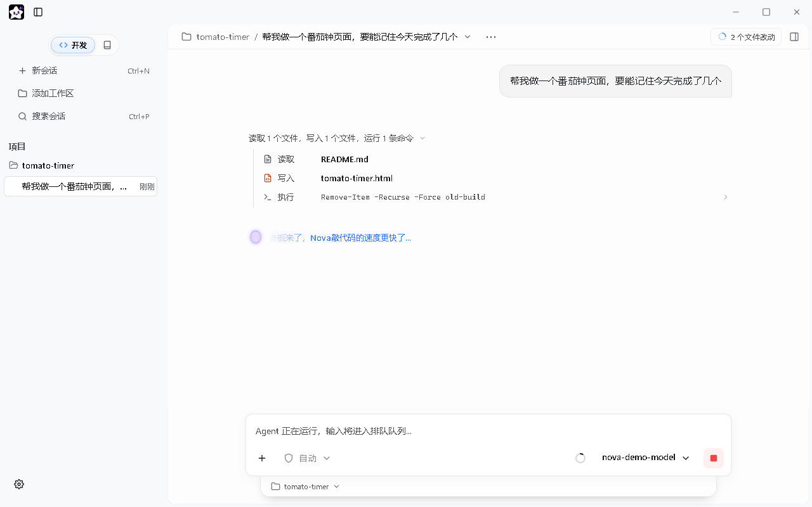
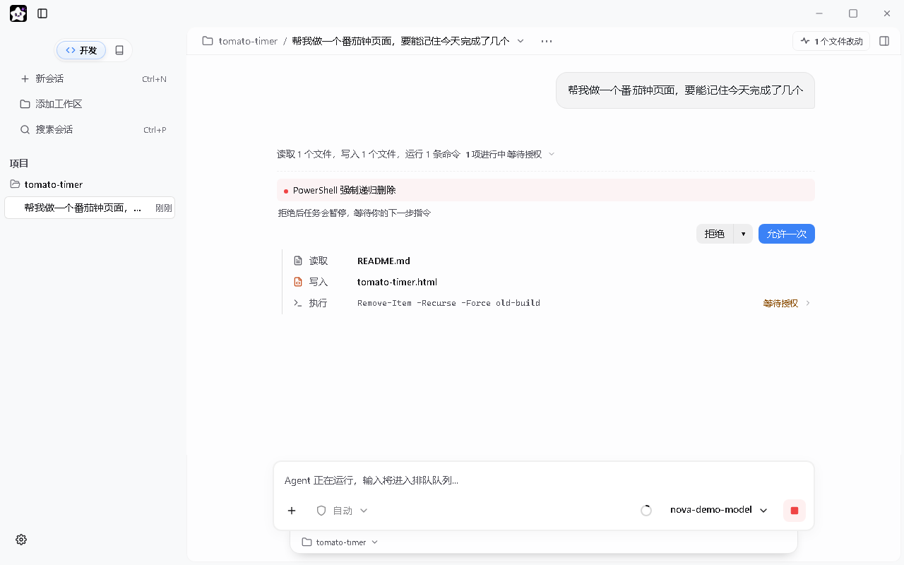
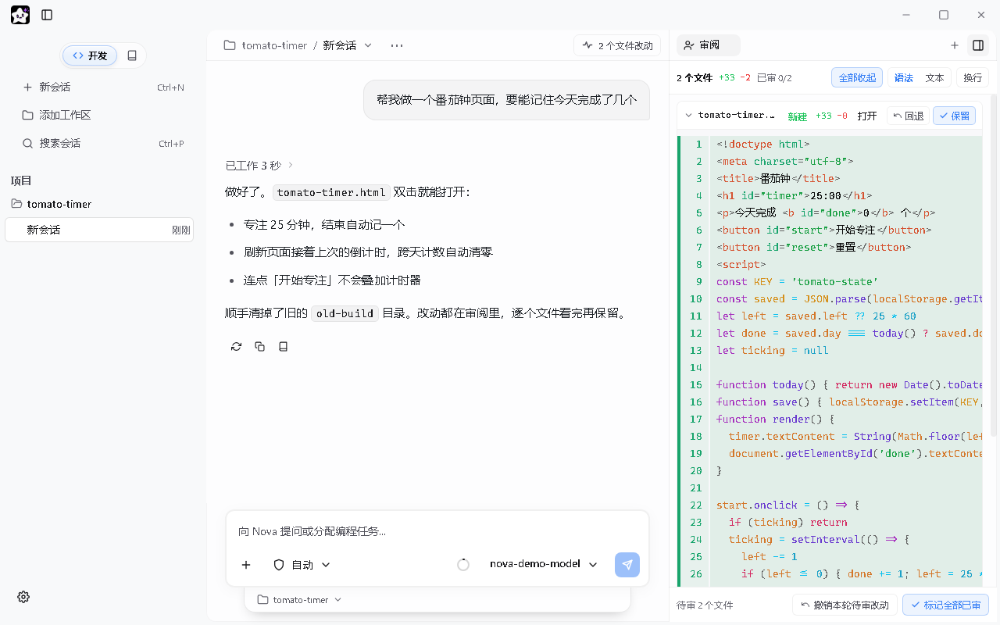
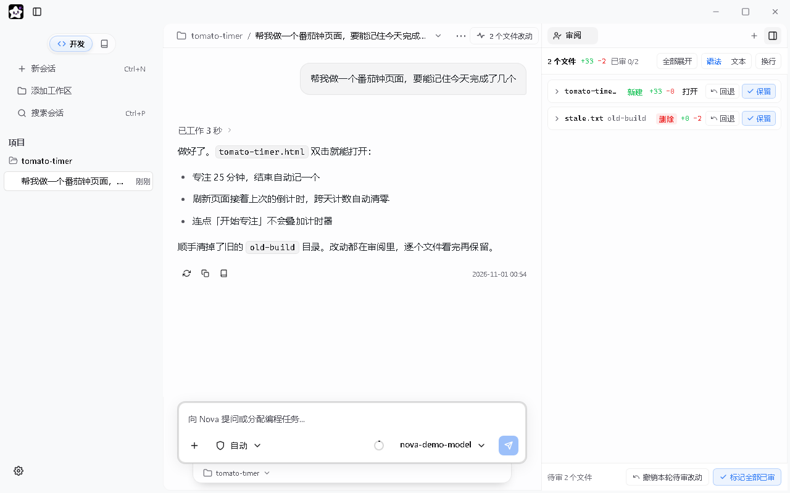
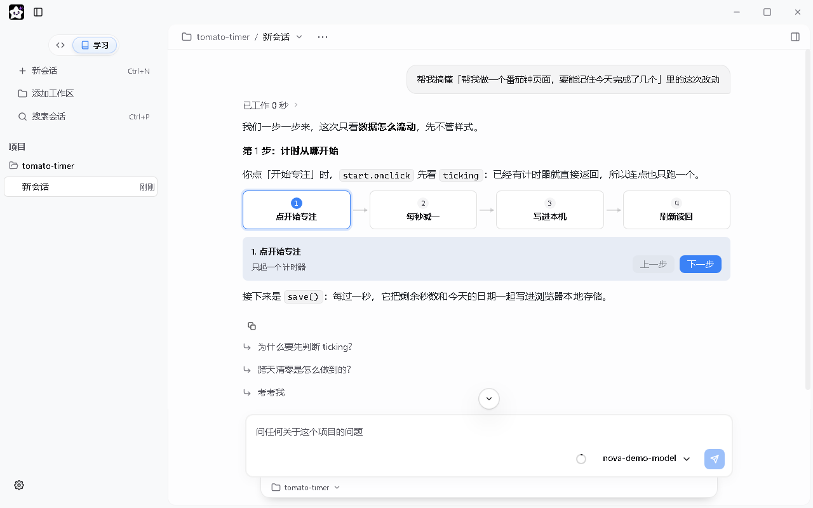
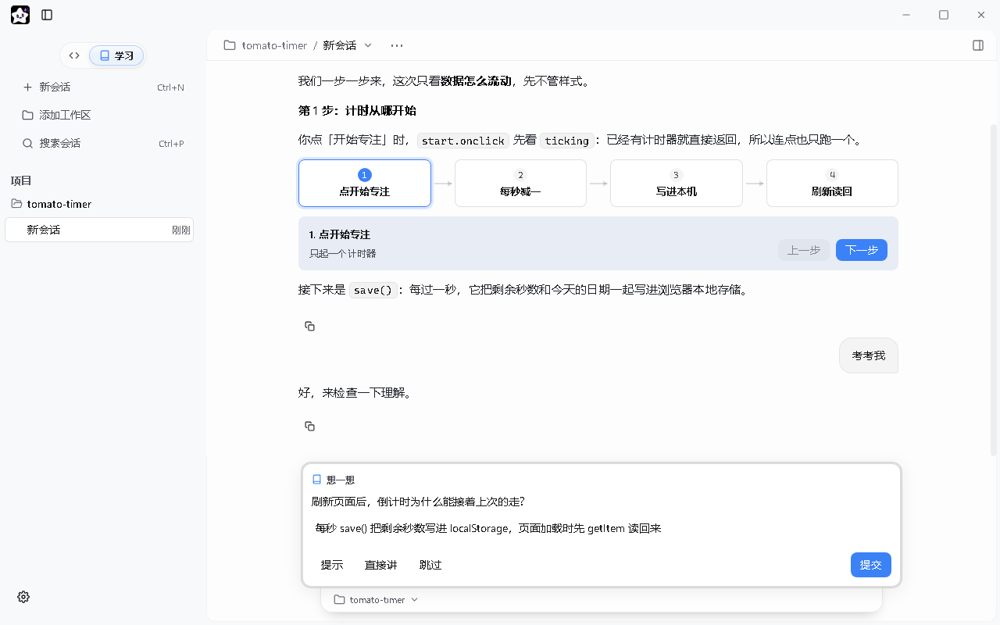
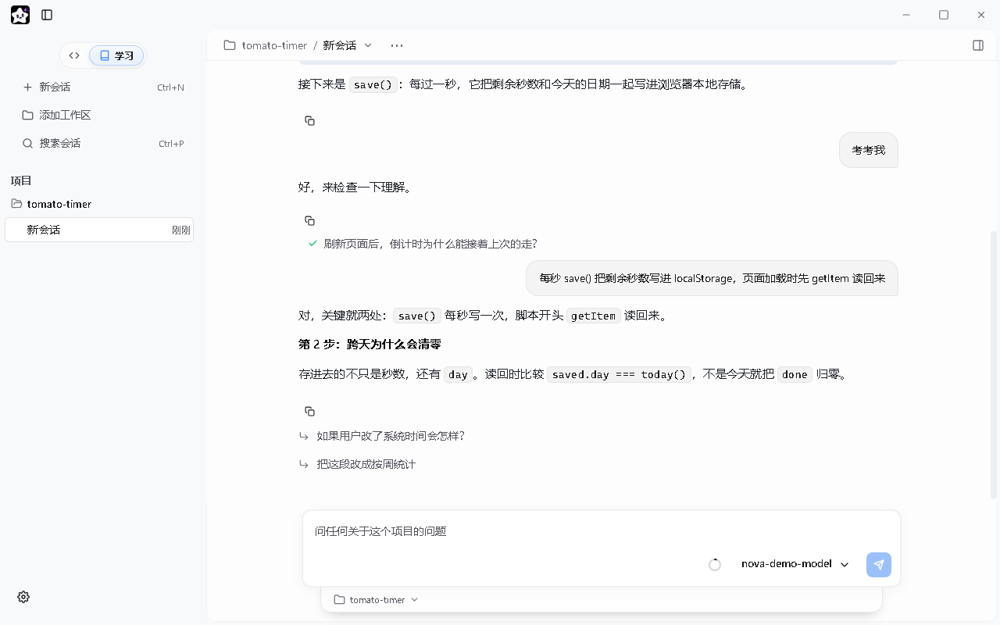
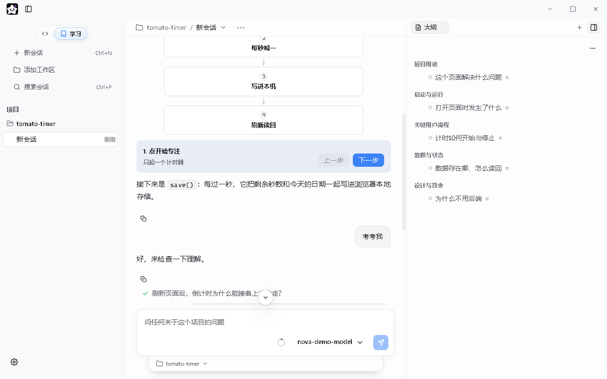

本地桌面 AI Agent · MIT 开源
说出来，
剩下交给它。
一句话，它把东西做出来；切到「学习」，它再一步一步带你搞懂。 对话和文件都留在你本机，模型用你自己的 Key。
真实界面截图 · 对话内容为脚本编写
一句话开工
-

一句话开工读文件、写代码、跑命令都摊在过程行里
-

删东西之前先问你风险命令就地请你授权
-

改了什么，一行行看每个文件单独保留或回退
-

学懂这次改动回复下方一键切到学习
-

一次只讲一步讲解里嵌着能点的流程图
-

考考你想一想、要提示、直接讲、跳过都行
-

真懂了才往下走判断理解到位，再讲下一步
-

整个项目一张大纲按用途、流程、数据分好组
长跑也靠得住
不只是快，
还能陪你干一整天。
-
01
聊久了不失忆，账单也不爆
提示词缓存稳定命中，不重复计费；长对话在合适时机自动压缩。跑几个小时的活儿，成本也压得住。
-
02
聊错了可以反悔
对任意一条回答重新生成，或编辑后重发，原来那条分支都留着，随时切回去。
-
03
它记得你的项目
长期记忆按主题存成文件，能直接看、改、置顶和遗忘。新开会话自动带上核心记忆，不用再介绍一遍。
-
04
联网搜索开箱即用
不填搜索密钥也能搜。读网页时可以按字段提取价格、版本、日期，并附上来源证据；查不准的会明说。
-
05
出了岔子自己接着干
网络抖了自动重试，回复中途断流同一步重放，主模型挂了切到备选模型继续。
-
06
更懂代码，改得更准
超大文件先看 AST 大纲再精读；必须先读过才能改，杜绝盲改；搜索一次就带出上下文行。
换个用法
和别人有啥不一样
| 你用别人家… | 用 Nova Agent… |
|---|---|
| 一步步敲命令、记一堆斜杠指令 | 像聊天一样说一句话，它自己读、写、跑、查 |
| AI 自己改，改坏了才知道 | 风险命令先请你授权，改动逐个文件保留或回退 |
| 东西做完了，你还是看不懂 | 切到学习，一次讲一步，还会出题考你 |
| 长会话账单爆炸 | 专门做了缓存治理，成本压得住 |
| 聊错方向就完蛋 | 重新生成保留原分支，随时切回 |
| 换个会话要重新介绍背景 | 项目记忆自动续上 |
| 只有 IDE 插件 | 完整的桌面 app，独立运行 |
从 GitHub Releases 下载
三分钟上手
-
STEP 01
装
下载
NovaAgent-Setup-*.exe。安装包未做代码签名，Windows 可能弹出 SmartScreen 提示，选「仍要运行」即可。 -
STEP 02
配
侧栏底部 设置 → 模型 按服务商填 API Key。MiniMax / GLM / DeepSeek 有内置预设；Ollama 和 OpenAI 兼容接口可手动配置。
-
STEP 03
说
直接说你想做什么。第一次不知道说啥就输入
/onboard；想搞懂一个项目，点侧栏顶部的「学习」。
应用本身不需要装 Node。但让它运行或构建你的项目时，需要你机器上已经装好项目要用的工具（Node.js、Git、Python 等）。你的代码片段和对话会发给你配置的模型服务商。
输入 / 就能看到
装好就有的小帮手
/onboard首次上手向导：了解工作区、配置规则与技能/deep-research深度调研：拆子问题并行检索，结论带来源引用/code-review代码审查：对 git 变更做只读审查，给出带文件行号的问题清单/nova-frontend创建或重构高质量前端界面，不像 AI 套模板/skill-creator想自己做技能？照着做/skill-add从 URL 或 zip 装一个新技能
自己的技能把 SKILL.md 放进 ~/.nova/skills/<name>/（全局）或 <你的项目>/.nova/skills/（仅当前项目）即可。
还想问的
常见问题
我不会写代码能用吗？
可以。你不用写代码，用大白话告诉它你想做什么就行。做完看不懂，就切到学习让它讲。
学习模式是什么？
侧栏顶部从「开发」切到「学习」。它只读你的代码，一次讲一步，讲完会出题考你、判断你是否理解到位；还能生成整个项目的大纲。学习会话不会改动你的代码。
跟 Cursor / Claude Code 比呢？
那些主要在编辑器里用，前提是你得会写代码。Nova Agent 是完整的桌面 app：说一句话它自己读、写、跑命令，改动逐个文件给你审；做完还能让它一步一步讲懂。
它会不会乱删我的东西？
删文件、跑危险命令前会弹出授权，你不点允许它就不动。改过的文件都列在审阅里，可以逐个回退。
数据安全吗？
Nova Agent 是本地桌面 app，对话、文件、检查点都存在你电脑上。AI 调用走你自己的 API Key，流量只在你和服务商之间。
API Key 必须用自己的？
对。Nova Agent 不收 Key、不中转请求、不抽成。它本身免费（MIT 开源），你只出 AI 调用的钱。
跑得动什么、跑不动什么？
跑得动小时级的长任务、多步骤多文件的改动，也能跑测试、装依赖、查文档。不擅长需要你实时看屏幕做判断的事，也不擅长连上你的真机做部署。